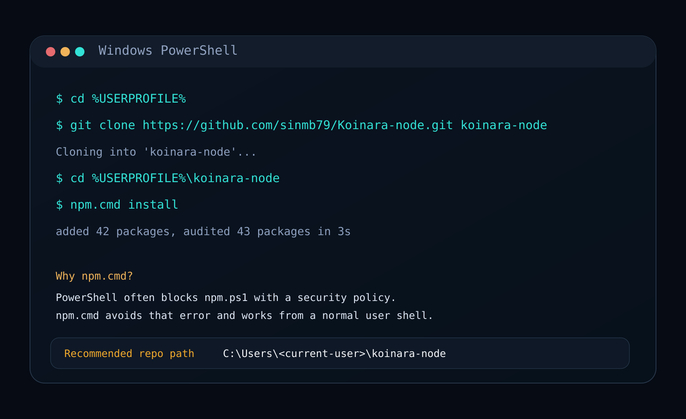
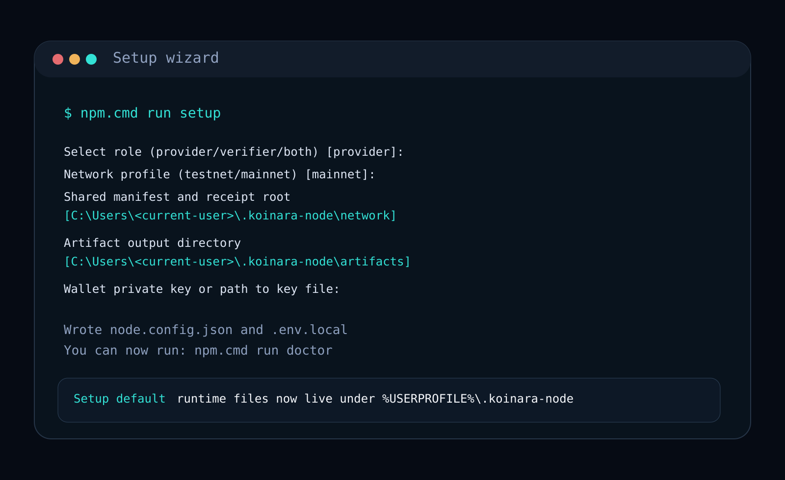
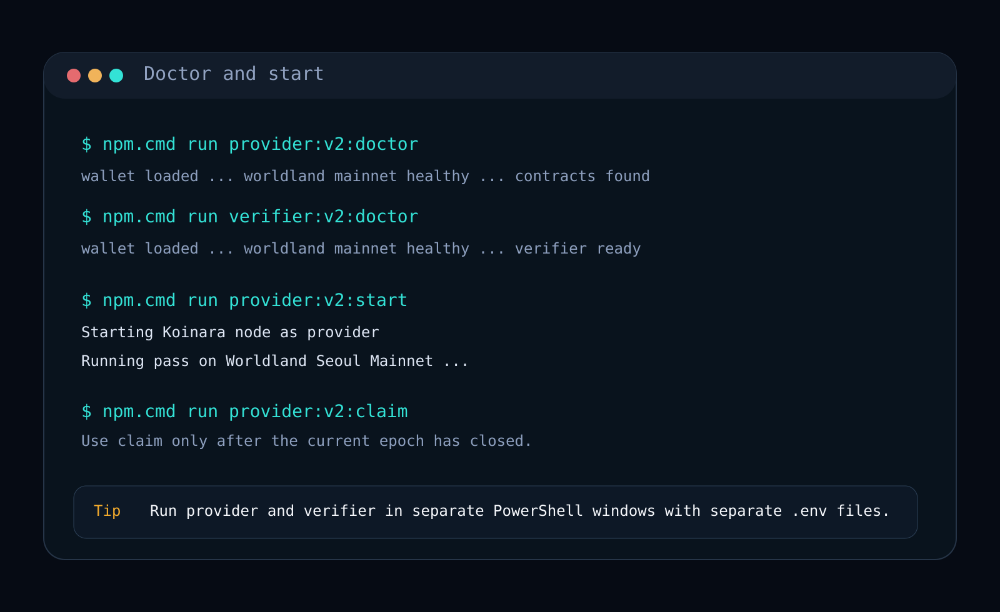

先在当前用户目录下克隆仓库。
cd $env:USERPROFILE
git clone https://github.com/sinmb79/Koinara-node.git koinara-node
cd $env:USERPROFILE\koinara-node
npm.cmd install
DOCS / WINDOWS 安装
这是一条给首次运营者使用的 Windows 路径。它会避开 PowerShell 的
npm.ps1 错误，把仓库放到当前用户目录下，并直接使用
Worldland v2 的命令。
cd $env:USERPROFILE
git clone https://github.com/sinmb79/Koinara-node.git koinara-node
cd $env:USERPROFILE\koinara-node
npm.cmd install
npm.cmd run setup
npm.cmd run provider:v2:doctor
npm.cmd run provider:v2:start
npm.cmd run provider:v2:claim